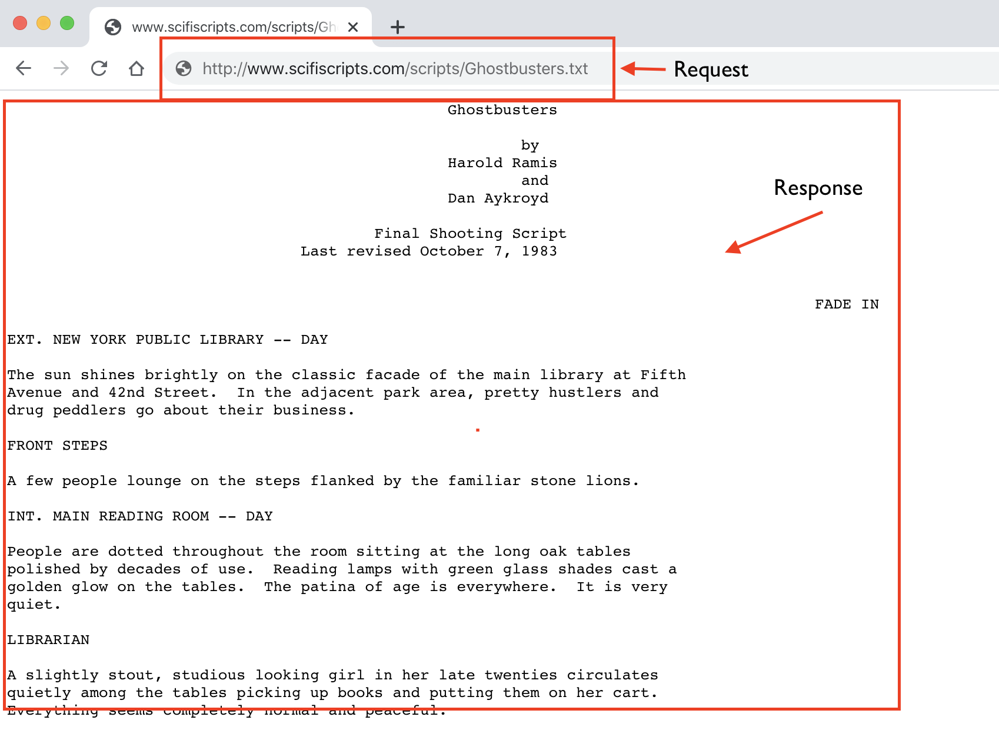
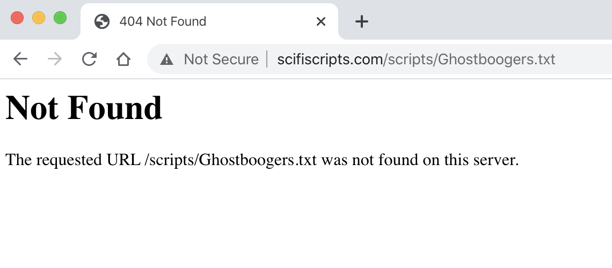
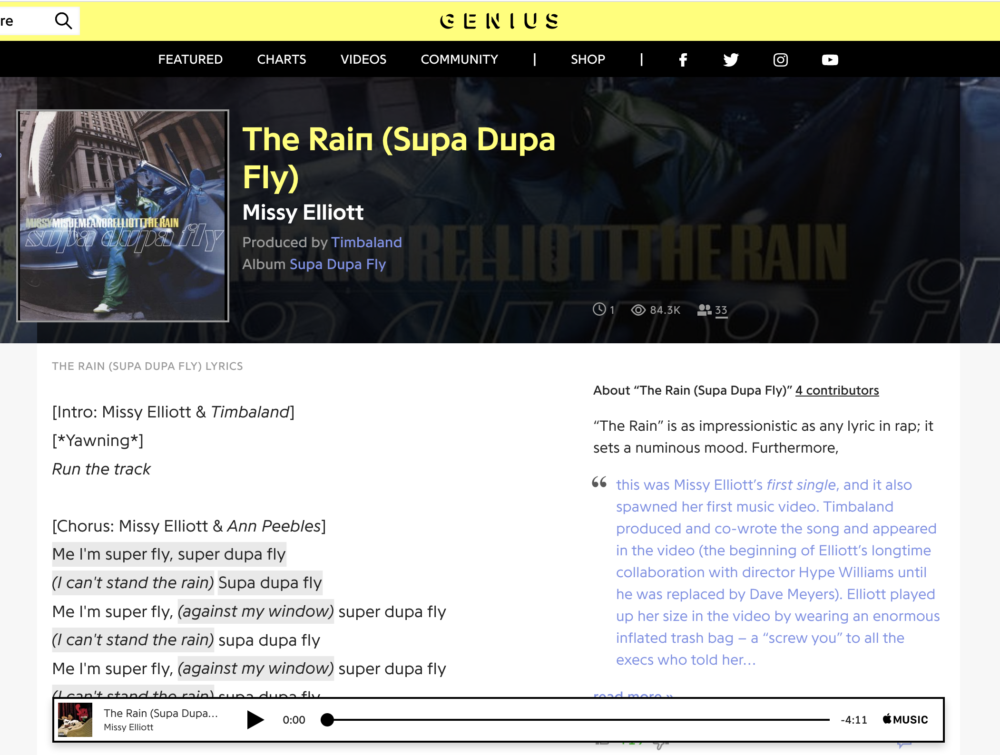
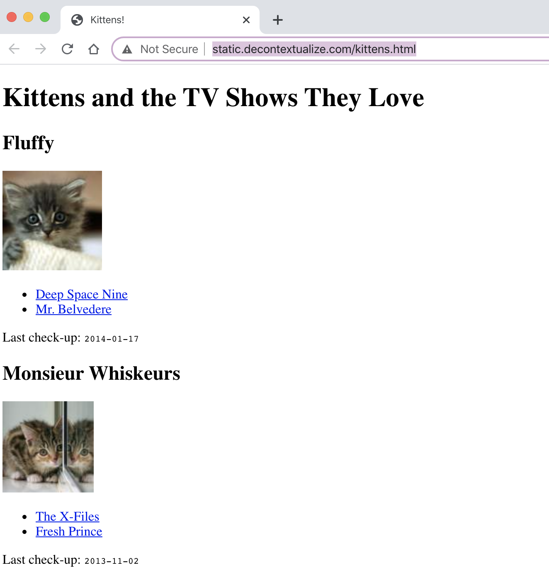
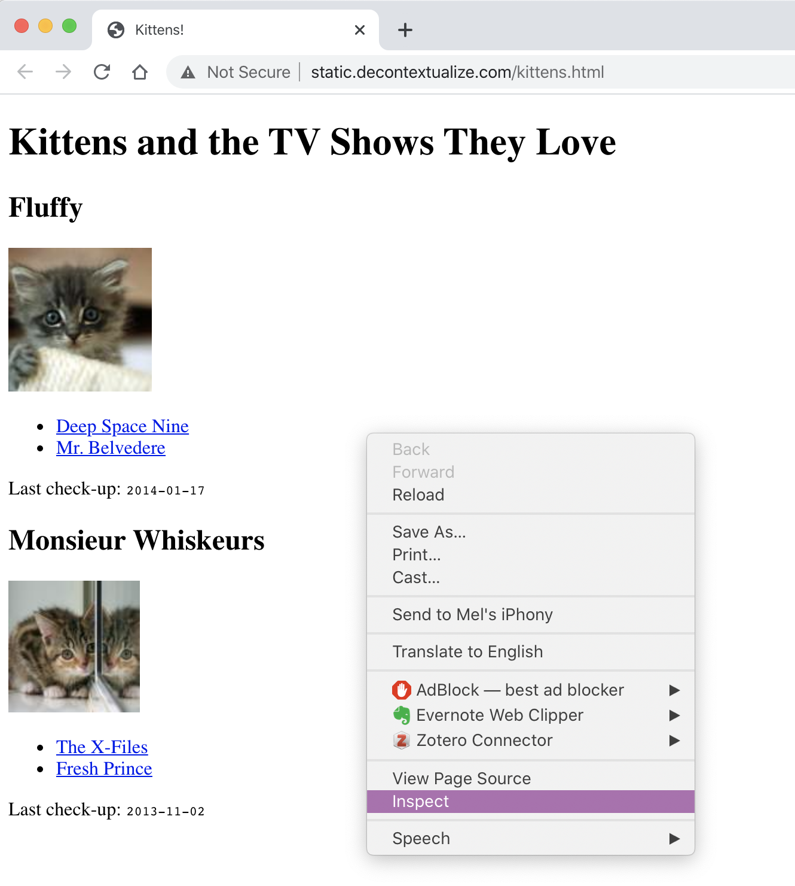
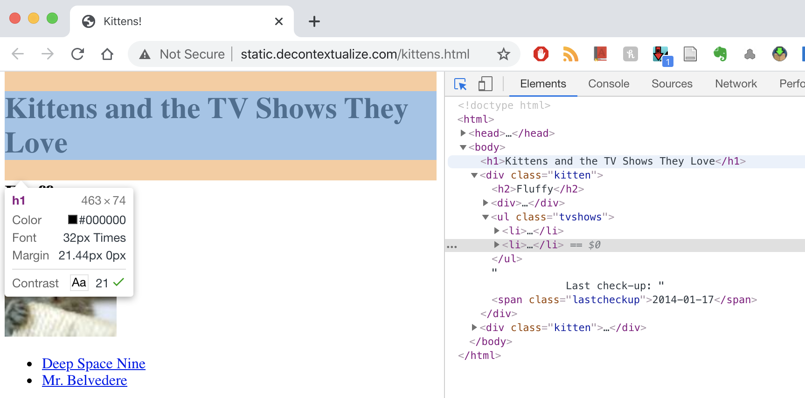

import pandas as pd26 Web Scraping — Part 1
Inspired by web scraping lessons from Lauren Klein and Allison Parrish
In this series of lessons, we’re going to introduce how to “scrape” data from the internet with the Python libraries requests and BeautifulSoup.
We will cover how to:
- Programmatically access the text of a web page
- Understand the basics of HTML
- Extract certain HTML elements
26.1 Why Do We Need To Scrape At All?
To understand the significance of web scraping, let’s walk through the likely data collection process behind “Film Dialogue from 2,000 screenplays, Broken Down by Gender and Age”.
To find their 2,000 screenplays, Hannah Andersen and Matt Daniels consulted a number of already existing sources — one of which was the Cornell Movie Dialogues Corpus. This is a corpus created by Cornell CIS professors Cristian Danescu-Niculescu-Mizil and Lillian Lee for their paper “Chameleons in imagined conversations”. Go Big Red!
These researchers helpfully shared a dataset of every URL that they used to find and access the screenplays in their own project.
Import Pandas
Read in CSV file
urls = pd.read_csv("../data/cornell-movie-corpus/raw_script_urls.csv", delimiter='\t', encoding='utf=8')Display DataFrame
urls| id | movie_title | script_url | |
|---|---|---|---|
| 0 | m0 | 10 things i hate about you | http://www.dailyscript.com/scripts/10Things.html |
| 1 | m1 | 1492: conquest of paradise | http://www.hundland.org/scripts/1492-Conquest... |
| 2 | m2 | 15 minutes | http://www.dailyscript.com/scripts/15minutes.... |
| 3 | m3 | 2001: a space odyssey | http://www.scifiscripts.com/scripts/2001.txt |
| 4 | m4 | 48 hrs. | http://www.awesomefilm.com/script/48hours.txt |
| ... | ... | ... | ... |
| 612 | m612 | watchmen | http://www.scifiscripts.com/scripts/wtchmn.txt |
| 613 | m613 | xxx | http://www.dailyscript.com/scripts/xXx.txt |
| 614 | m614 | x-men | http://www.scifiscripts.com/scripts/xmenthing... |
| 615 | m615 | young frankenstein | http://www.horrorlair.com/scripts/young.txt |
| 616 | m616 | zulu dawn | http://www.aellea.com/script/zuludawn.txt |
617 rows × 3 columns
Each movie title in this CSV file is paired with a URL for the screenplay. How can we actually use these URLs to get computationally tractable text data?
Though we could manually navigate to each URL and copy/paste each screenplay into a file, that would be suuuuper slow and painstaking, and we would lose crucial data in the process — information that might help us automatically distinguish the title of the movie from the screenplay itself, for example. It would be much better to programmatically access the text data attached to every URL.
26.2 Responses and Requests
To programmatically access the text data attached to every URL, we can use a Python library called requests.
When you type in a URL in your search address bar, you’re sending an HTTP request for a web page, and the server which stores that web page will accordingly send back a response, some web page data that your browser will render.

26.2.1 Import Requests
import requests26.2.2 Get HTML Data
With the .get() method, we can request to “get” web page data for a specific URL, which we will store in a varaible called response.
response = requests.get("http://www.scifiscripts.com/scripts/Ghostbusters.txt")26.2.3 HTTP Status Code
If we check out response, it will simply tell us its HTTP response code, aka whether the request was successful or not.
“200” is a successful response, while “404” is a common “Page Not Found” error.
response<Response [200]>Let’s see what happens if we change the title of the movie from Ghostbusters to Ghostboogers in the URL…
bad_response = requests.get("http://www.scifiscripts.com/scripts/Ghostboogers.txt")bad_response<Response [404]>
26.2.4 Extract Text From Web Page
To actually get at the text data in the reponse, we need to use .text, which we will save in a variable called html_string. The text data that we’re getting is formatted in the HTML markup language, which we will talk more about in the BeautifulSoup section below.
html_string = response.textHere’s the screenplay now in a variable.
print(html_string[:500] + "...") Ghostbusters
by
Harold Ramis
and
Dan Aykroyd
Final Shooting Script
Last revised October 7, 1983
FADE IN
EXT. NEW YORK PUBLIC LIBRARY -- DAY
The sun shines brightly on the classic facade of the main library at Fifth
Avenue and 42nd Street. In the adjacent park area, pretty hustlers and
drug peddlers go about their business.
FRONT STEPS
A few people lounge on the steps flanked by the familiar stone lions.
INT. MAI...26.2.5 Extract Text From Multiple Web Pages
Let’s quickly demonstrate how we might extract the screenplay text for every URL in the DataFrame. To do so, we’re going to create a smaller DataFrame from the Cornell Movie Dialogue Corpus, which consists of the first 10 movies.
sample_urls = urls[:10]sample_urls| id | movie_title | script_url | |
|---|---|---|---|
| 0 | m0 | 10 things i hate about you | http://www.dailyscript.com/scripts/10Things.html |
| 1 | m1 | 1492: conquest of paradise | http://www.hundland.org/scripts/1492-Conquest... |
| 2 | m2 | 15 minutes | http://www.dailyscript.com/scripts/15minutes.... |
| 3 | m3 | 2001: a space odyssey | http://www.scifiscripts.com/scripts/2001.txt |
| 4 | m4 | 48 hrs. | http://www.awesomefilm.com/script/48hours.txt |
| 5 | m5 | the fifth element | http://www.scifiscripts.com/scripts/5thelemen... |
| 6 | m6 | 8mm | http://www.dailyscript.com/scripts/eight-mill... |
| 7 | m7 | a nightmare on elm street 4: the dream master | http://www.hundland.org/scripts/A-Nightmare-o... |
| 8 | m8 | a nightmare on elm street: the dream child | http://www.hundland.org/scripts/A-Nightmare-o... |
| 9 | m9 | the atomic submarine | http://leonscripts.tripod.com/scripts/ATOMICS... |
We’re going to make a function called scrape_screenplay() that includes our requests.get() and response.text code.
def scrape_screenplay(url):
response = requests.get(url)
html_string = response.text
return html_stringThen we’re going apply it to the “script_url” column of the DataFrame and create a new column for the resulting extracted text.
sample_urls['text'] = sample_urls['script_url'].apply(scrape_screenplay)SSLError: HTTPSConnectionPool(host='www.hundland.org', port=443): Max retries exceeded with url: /scripts/1492-ConquestOfParadise.txt (Caused by SSLError(SSLCertVerificationError(1, '[SSL: CERTIFICATE_VERIFY_FAILED] certificate verify failed: unable to get local issuer certificate (_ssl.c:1108)')))sample_urls| id | movie_title | script_url | |
|---|---|---|---|
| 0 | m0 | 10 things i hate about you | http://www.dailyscript.com/scripts/10Things.html |
| 1 | m1 | 1492: conquest of paradise | http://www.hundland.org/scripts/1492-Conquest... |
| 2 | m2 | 15 minutes | http://www.dailyscript.com/scripts/15minutes.... |
| 3 | m3 | 2001: a space odyssey | http://www.scifiscripts.com/scripts/2001.txt |
| 4 | m4 | 48 hrs. | http://www.awesomefilm.com/script/48hours.txt |
| 5 | m5 | the fifth element | http://www.scifiscripts.com/scripts/5thelemen... |
| 6 | m6 | 8mm | http://www.dailyscript.com/scripts/eight-mill... |
| 7 | m7 | a nightmare on elm street 4: the dream master | http://www.hundland.org/scripts/A-Nightmare-o... |
| 8 | m8 | a nightmare on elm street: the dream child | http://www.hundland.org/scripts/A-Nightmare-o... |
| 9 | m9 | the atomic submarine | http://leonscripts.tripod.com/scripts/ATOMICS... |
The DataFrame above is truncated, so we can’t see the full contents of the “text” column. But if we print out every row in the column, we can see that we successfully extracted text for each URL (though some of these URLs returned 404 errors).
for text in sample_urls['text']:
print(text[:500])KeyError: 'text'26.3 Web Scraping
Not all web pages will be as easy to scrape as these screenplay files, however. Let’s say we wanted to scrape the lyrics for Missy Elliott’s song “The Rain (Supa Dupa Fly)” (1997) from Genius.com.

Even at a glance, we can tell that this Genius web page is a lot more complicated than the Ghostbusters page and that it contains a lot of information beyond the lyrics.
Sure enough, if we use our requests library again and try to grab the data for this web page, the underlying data is much more complicated, too.
response = requests.get("https://genius.com/Missy-elliott-the-rain-supa-dupa-fly-lyrics")
html_string = response.text
print(html_string[:2000] + "...")<!doctype html>
<html>
<head>
<title>Missy Elliott – The Rain (Supa Dupa Fly) Lyrics | Genius Lyrics</title>
<meta http-equiv="Content-Type" content="text/html; charset=utf-8" />
<meta content='width=device-width,initial-scale=1' name='viewport'>
<meta name="apple-itunes-app" content="app-id=709482991">
<link href="https://assets.genius.com/images/apple-touch-icon.png?1669754445" rel="apple-touch-icon" />
<link href="https://assets.genius.com/images/apple-touch-icon.png?1669754445" rel="apple-touch-icon" />
<!-- Mobile IE allows us to activate ClearType technology for smoothing fonts for easy reading -->
<meta http-equiv="cleartype" content="on">
<META name="y_key" content="f63347d284f184b0">
<meta property="og:site_name" content="Genius"/>
<meta property="fb:app_id" content="265539304824" />
<meta property="fb:pages" content="308252472676410" />
<link title="Genius" type="application/opensearchdescription+xml" rel="search" href="https://genius.com/opensearch.xml">
<script>
!function(){if('PerformanceLongTaskTiming' in window){var g=window.__tti={e:[]};
g.o=new PerformanceObserver(function(l){g.e=g.e.concat(l.getEntries())});
g.o.observe({entryTypes:['longtask']})}}();
</script>
<!--sse-->
<script>window['Genius.ads'] = window['Genius.ads'] || [];</script>
<link as="script" href="https://securepubads.g.doubleclick.net/tag/js/gpt.js" rel="preload" /><script async="true" src="https://securepubads.g.doubleclick.net/tag/js/gpt.js" type="text/javascript"></script>
<script>
!function(a9,a,p,s,t,A,g){if(a[a9])return;function q(c,r){a[a9]._Q.push([c,r])}a[a9]={init:function(){q("i",arguments)},fetchBids:function(){q("f",arguments)},setDisplayBids:function(){},targetingKeys:function(){return[]},_Q:[]};A=p.createElement(s);A.async=!0;A.src=t;g=p.getElementsByTagName(s)[0];g.parentNode.insertBefore(A,g)}("apstag",window,document,"script","//c.amazon-adsystem.com/aax2/apstag.js");
</script>
<link as="script" href="https:/...How can we extract just the song lyrics from this messy soup of a document? Luckily there’s a Python library that can help us called BeautifulSoup, which parses HTML documents.
To understand BeautifulSoup and HTML, we’re going to briefly depart from our Missy Elliot lyrics challenge to consider a much simpler website. This toy website was made by the poet, programmer, and professor Allison Parrish explicitly for the purposes of teaching BeautifulSoup.
26.4 HTML
Parrish’s website is titled “Kittens and the TV Shows They Love.” It can be found at the following URL: http://static.decontextualize.com/kittens.html

If we use our requests library on this Kittens TV website, this is what we get:
response = requests.get("http://static.decontextualize.com/kittens.html")
html_string = response.text
print(html_string)<!doctype html>
<html>
<head>
<title>Kittens!</title>
<style type="text/css">
span.lastcheckup { font-family: "Courier", fixed; font-size: 11px; }
</style>
</head>
<body>
<h1>Kittens and the TV Shows They Love</h1>
<div class="kitten">
<h2>Fluffy</h2>
<div><img src="http://placekitten.com/120/120"></div>
<ul class="tvshows">
<li>
<a href="http://www.imdb.com/title/tt0106145/">Deep Space Nine</a>
</li>
<li>
<a href="http://www.imdb.com/title/tt0088576/">Mr. Belvedere</a>
</li>
</ul>
Last check-up: <span class="lastcheckup">2014-01-17</span>
</div>
<div class="kitten">
<h2>Monsieur Whiskeurs</h2>
<div><img src="http://placekitten.com/110/110"></div>
<ul class="tvshows">
<li>
<a href="http://www.imdb.com/title/tt0106179/">The X-Files</a>
</li>
<li>
<a href="http://www.imdb.com/title/tt0098800/">Fresh Prince</a>
</li>
</ul>
Last check-up: <span class="lastcheckup">2013-11-02</span>
</div>
</body>
</html>
26.4.2 HTML Attributes, Classes, and IDs
HTML elements sometimes come with even more information inside a tag. This will often be a keyword (like class or id) followed by an equals sign = and a further descriptor such as <div class="kitten">
We need to know about tags as well as attributes, classes, and IDs because this is how we’re going to extract specific HTML data with BeautifulSoup.
26.5 BeautifulSoup
from bs4 import BeautifulSoupTo make a BeautifulSoup document, we call BeautifulSoup() with two parameters: the html_string from our HTTP request and the kind of parser that we want to use, which will always be "html.parser" for our purposes.
response = requests.get("http://static.decontextualize.com/kittens.html")
html_string = response.text
document = BeautifulSoup(html_string, "html.parser")document<!DOCTYPE html>
<html>
<head>
<title>Kittens!</title>
<style type="text/css">
span.lastcheckup { font-family: "Courier", fixed; font-size: 11px; }
</style>
</head>
<body>
<h1>Kittens and the TV Shows They Love</h1>
<div class="kitten">
<h2>Fluffy</h2>
<div><img src="http://placekitten.com/120/120"/></div>
<ul class="tvshows">
<li>
<a href="http://www.imdb.com/title/tt0106145/">Deep Space Nine</a>
</li>
<li>
<a href="http://www.imdb.com/title/tt0088576/">Mr. Belvedere</a>
</li>
</ul>
Last check-up: <span class="lastcheckup">2014-01-17</span>
</div>
<div class="kitten">
<h2>Monsieur Whiskeurs</h2>
<div><img src="http://placekitten.com/110/110"/></div>
<ul class="tvshows">
<li>
<a href="http://www.imdb.com/title/tt0106179/">The X-Files</a>
</li>
<li>
<a href="http://www.imdb.com/title/tt0098800/">Fresh Prince</a>
</li>
</ul>
Last check-up: <span class="lastcheckup">2013-11-02</span>
</div>
</body>
</html>26.5.1 Extract HTML Element
We can use the .find() method to find and extract certain elements, such as a main header.
document.find("h1")<h1>Kittens and the TV Shows They Love</h1>If we want only the text contained between those tags, we can use .text to extract just the text.
document.find("h1").text'Kittens and the TV Shows They Love'type(document.find("h1").text)strFind the HTML element that contains an image.
document.find("img")<img src="http://placekitten.com/120/120"/>26.5.2 Extract Multiple HTML Elements
You can also extract multiple HTML elements at a time with .find_all()
document.find_all("img")[<img src="http://placekitten.com/120/120"/>,
<img src="http://placekitten.com/110/110"/>]document.find_all("div", attrs={"class": "kitten"})[<div class="kitten">
<h2>Fluffy</h2>
<div><img src="http://placekitten.com/120/120"/></div>
<ul class="tvshows">
<li>
<a href="http://www.imdb.com/title/tt0106145/">Deep Space Nine</a>
</li>
<li>
<a href="http://www.imdb.com/title/tt0088576/">Mr. Belvedere</a>
</li>
</ul>
Last check-up: <span class="lastcheckup">2014-01-17</span>
</div>,
<div class="kitten">
<h2>Monsieur Whiskeurs</h2>
<div><img src="http://placekitten.com/110/110"/></div>
<ul class="tvshows">
<li>
<a href="http://www.imdb.com/title/tt0106179/">The X-Files</a>
</li>
<li>
<a href="http://www.imdb.com/title/tt0098800/">Fresh Prince</a>
</li>
</ul>
Last check-up: <span class="lastcheckup">2013-11-02</span>
</div>]document.find("h2").text'Fluffy'document.find_all("h2")[<h2>Fluffy</h2>, <h2>Monsieur Whiskeurs</h2>]Heads up! The code below will cause an error.Let’s try to extract the text from all the header2 elements:
document.find_all("h2").textAttributeError: ResultSet object has no attribute 'text'. You're probably treating a list of items like a single item. Did you call find_all() when you meant to call find()?Uh oh. That didn’t work! In order to extract text data from multiple HTML elements, we need a for loop and some list-building.
all_h2_headers = document.find_all("h2")all_h2_headers[<h2>Fluffy</h2>, <h2>Monsieur Whiskeurs</h2>]First we will make an empty list called h2_headers.
Then for each header in all_h2_headers, we will grab the .text, put it into a variable called header_contents, then .append() it to our h2_headers list.
h2_headers = []
for header in all_h2_headers:
header_contents = header.text
h2_headers.append(header_contents)h2_headers['Fluffy', 'Monsieur Whiskeurs']How might we transform this for loop into a list comprehension?
#For Loop
h2_headers = []
for header in all_h2_headers:
header_contents = header.text
h2_headers.append(header_contents)Check out the list comprehension answer here
h2_headers = [header.text for header in all_h2_headers]
h2_headers['Fluffy', 'Monsieur Whiskeurs']26.6 Inspect HTML Elements with Browser
Most times if you’re looking to extract something from an HTML document, it’s best to use your “Inspect” capabilities in your web browser. You can hover over elements that you’re interested in and find that specific element in the HTML.

For example, if we hover over the main header:

26.7 Your Turn!
Ok so now we’ve learned a little bit about how to use BeautifulSoup to parse HTML documents. So how would we apply what we’ve learned to extract Missy Elliott lyrics?
response = requests.get("https://genius.com/Missy-elliott-the-rain-supa-dupa-fly-lyrics")
html_str = response.text
document = BeautifulSoup(html_str, "html.parser")document.text[:1000] + "...""\n\n\nMissy\xa0Elliott – The Rain (Supa Dupa Fly) Lyrics | Genius Lyrics\n\n\n\n\n\n\n\n\n\n\n\n\n\n\n\n\n\n\n\n\n\n\n\n\n\n\n\n\n\n\n\n\n\n\n\n\n\n\n\n\n\n\n\n\n\n\n\n\n\n\n\n\n\n\n\n\n\n\n\n\n\nFeaturedChartsVideosPromote Your MusicSign UpThe Rain (Supa Dupa Fly)Missy ElliottTrack 4 on\xa0Supa Dupa Fly \xa0“The Rain” is as impressionistic as any lyric in rap; it sets a numinous mood. Furthermore,\n\nthis was Missy Elliott’s first single, and it also spawned her first music… Read More\xa0Produced byTimbalandRelease DateMay 20, 1997View All Credits\xa01115.2K446The Rain (Supa Dupa Fly) Lyrics[Intro: Missy Elliott, Ann Peebles & Timbaland]Run the trackMe, I'm supa flySupa-dupa fly, supa-dupa fly (I can't stand the rain)Me, I'm supa fly (Against my window)Supa-dupa fly, supa-dupa fly (I can't stand the rain)Me, I'm supa fly (Against my window)Supa-dupa fly, supa-dupa fly (I can't stand the rain)Me, I'm supa fly (Against my window)[Verse 1: Missy Elliott]When the rain hits my windowI take and *inhale, cough* me some indoMe and Timbaland, ooh, we sang a jangleWe so tigh..."https://genius.com/Missy-elliott-the-rain-supa-dupa-fly-lyrics
What HTML element do we need to “find” to extract the song lyrics?
Check answer here
missy_lyrics = document.find("p").text
print(missy_lyrics)[Intro: Missy Elliott & Timbaland]
[*Yawning*]
Run the track
[Chorus: Missy Elliott & Ann Peebles]
Me I'm super fly, super dupa fly
(I can't stand the rain) Supa dupa fly
Me I'm super fly, (against my window) super dupa fly
(I can't stand the rain) supa dupa fly
Me I'm super fly, (against my window) super dupa fly
(I can't stand the rain) supa dupa fly
Me I'm super fly, (against my window)
[Verse 1: Missy Elliott]
When the rain hits my window
I take and *cough* me some indo
Me and Timbaland, ooh, we sang a jangle
We so tight that you get our styles tangled
Sway on dosie-do like you loco
Can we get kinky tonight?
Like Coko, so-so
You don't wanna play with my Yo-Yo
I smoke my hydro on the D-low (D-D-D-D-D-low)
[Hook: Ann Peebles]
I can't stand the rain against my window
I can't stand the rain against my window
I can't stand the rain against my window
I can't stand the rain against my window
I can't stand the rain
[Verse 2: Missy Elliott]
Beep, beep, who got the keys to the Jeep, vroom
I'm driving to the beach
Top down, loud sounds, see my peeps
Give them pounds, now look who it be
It be me, me, me and Timothy
Look like it's 'bout to rain, what a shame
I got the Armor-All to shine up the stain
Oh, Missy, try to maintain
Icky-icky-icky-icky-icky-icky-icky
[Hook: Ann Peebles]
I can't stand the rain against my window
I can't stand the rain against my window
I can't stand the rain against my window
I can't stand the rain against my window
I can't stand the rain
[Verse 3: Missy Elliott & Ann Peebles]
I feel the wind
5, 6, 7, 8, 9, 10
9, 10
Begin, I sit on Hills like Lauryn
Until the rain starts coming down, pouring
Chill, I got my umbrella
My finger waves these days, they fall like Humpty
Chumpy, I break up with him before he dump me
To have me, (I can't stand the rain), yes, you lucky (against my window)
[Outro: Ann Peebles]
I can't stand the rain against my window
I can't stand the rain against my window
I can't stand the rain against my window
I can't stand the rain
I can't stand the rain
I can't stand the rain
I can't stand the rain
I can't stand the rain against my window
I can't stand the rain against my window
I I can't stand the rain against my window
I can't stand the rain against my window
I can't stand the rain
I can't stand the rain
I can't stand the rain
I can't stand the rainWhat HTML element do we need to “find” to extract the title?
Check answer here
song_title = document.find('h1').text
print(song_title)The Rain (Supa Dupa Fly)If there is anything wrong, please open an issue on GitHub or email f.pianzola@rug.nl